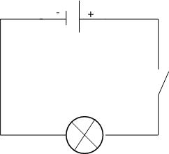
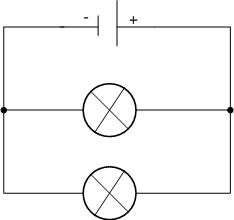

Teeme tutvust elektriga!
Elekter - Elekter on elektrilaengute olemasolust tingitud nähtuste kompleks. Positiivse või negatiivs elektrilaenguga osakesed tekitavad elektromagnetvälja ja alluvad selle toimele.
Sõna elekter ei ole tänapäeval terminina kasutusel. Varem on füüsikas selle all mõistetud elektrilaengut (elektrihulka). Praegu mõistetakse üldkeeles elektri all kõige sagedamini elektrienergiat või elektrivoolu.
Kas teadsid, et sõna elekter tuleneb vanakreeka sõnast ήλεκτρον (ēlektron) "merevaik"? Nimetus tuleb sellest, et merevaik hõõrdumisel elektriseerub ehk omandab elektrilaengu.
Vooluringi moodustavad omavahel juhtmetega ühendatud vooluallikas, elektritarvitid ja lülitid. Vooluallikas tekitab ja hoiab vooluringi ühendatud juhtides elektrivälja.
Tarvitis muundub osa elektrivälja energiast mingiks teiseks energialiigiks. Näitseks elektrilambis muundub elektrienergia soojuseks ja valguseks.
Juhtmeid kasutatakse vooluringi osade ühendamiseks. Lüliti abil saab vooluringi vastavalt vajadusele kas sulgeda või avada.

Kasutatud materjal: http://vooluring.weebly.com/
Mis on jada- ja rööpühendus?
Jadaühenduse korral on elektritarviti ühendatud omavahel jadamisi ehk järjestikku.
Joonisel on vooluringi elektriskeem, kus kaks lampi on ühendatud jadamisi.
NB! Kui üks lamp läbi põleb või see pesast eemaldatakse, katkeb elektrivool kogu vooluringis ning kustub ka teine lamp.
NB! Ampermeeter ühendatatkse jadamisi seadmega, mille voolutugevust mõõdetakse.

Rööpühenduse korral on tarviti ühendatud rööbiti ehk paralleelselt.
Joonisel on vooluringi elektriskeem, kus kaks lampi on ühendatud rööbiti.
Rööpühenduse puhul põlevad lambid teineteisest sõltumatult.
NB! Kui vooluringis üks lamp läbi põleb või see pesast eemaldatakse, põleb teine edasi.
NB! Voltmeeter ühendatatkse rööbiti juhiga, mille otstel pinget tahetakse mõõta.

Ülesanne: Joonista elektriskeem, kus on vooluallikas, kolm jadamisi ühendatud lampi, lüliti ja ampermeeter voolutegevuse mõõtmiseks.
Kasutatud materjal: http://vooluring.weebly.com/
Ohm, volt ja amper
Ohm seadus määrab kindlaks pinge U, voolutugevuse I ja takistuse R vahelise seose. U=IR, I=U/R ja R=U/I.
- I on ahelaosa läbiva voolu tugevus, mida mõõdetakse amprites (A);
- U on pinge, mida mõõdetakse voltides (V);
- R on vooluahela lõigu takistus, mida mõõdetakse oomides (Ω).
Niisiis: sinu koduse elektrivõrgu voolu tugevus on elektrikilbis arvatavasti umbes 20 amprit ja sealt voolab juhtmetesse 220-voldine pinge, mitte kuidagi teistpidi. Ja kui sa üritad mingist allikast elektrit edasi vedada liiga peenikeste kaablitega, siis läheb takistus liiga suureks ja ... ilmselt kärsatad midagi maha.
Kasutatud materjal: http://mehele.ohtuleht.ee/
Testi oma teadmisi!
1. Mis moodustavad vooluringi?
2. Mida teeb Tarvitis?
3. Kuidas on jadaühenduse korral elektritarviti ühendatud?
4. Milline on Ohm seaduse poolt kindlaks määratud pinge U, voolutugevuse I ja takistuse R vaheline seos?
Küsimus 1:Vastasid valesti! Õige vastus on C.
Küsimus 2:Vastasid valesti! Õige vastus on A.
Küsimus 3: Vastasid valesti! Õige vastus on D.
Küsimus 4: Vastasid valesti! Õige vastus on C.
Oled tubli! Vastasid kõigile küsimustele õigesti!